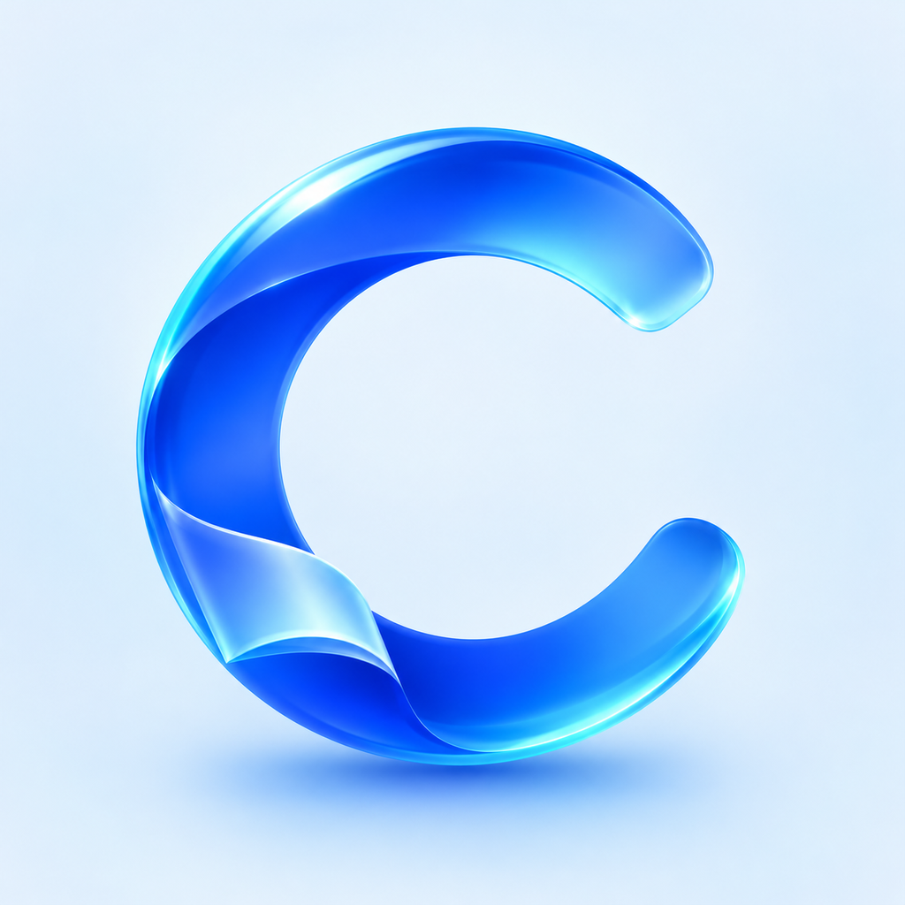
Captures natives du simulateur iPhone, sans retouche.
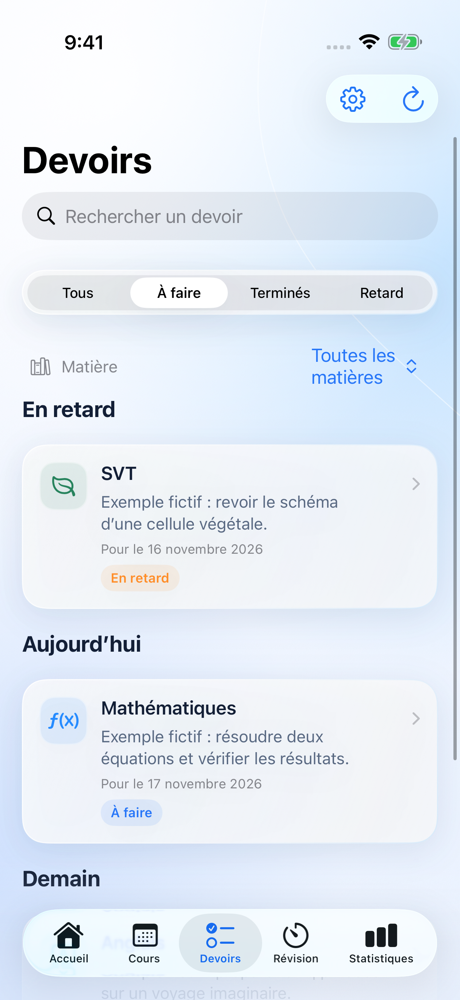
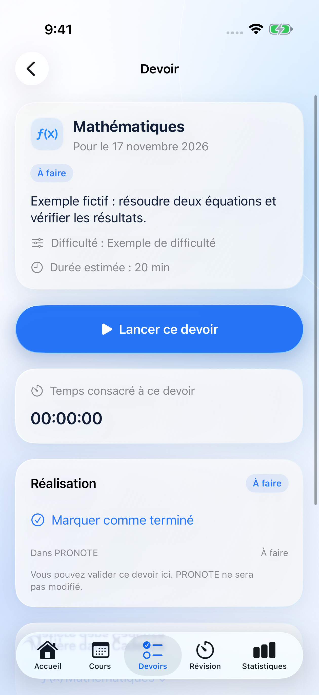
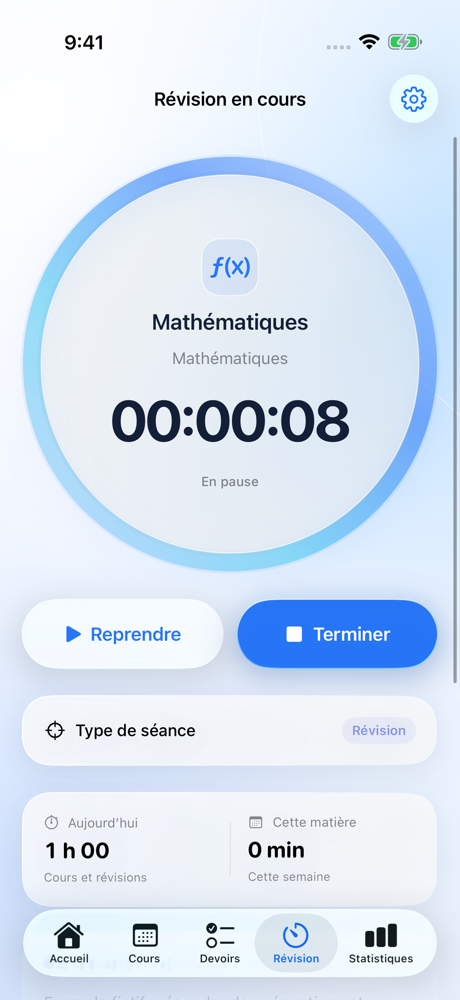
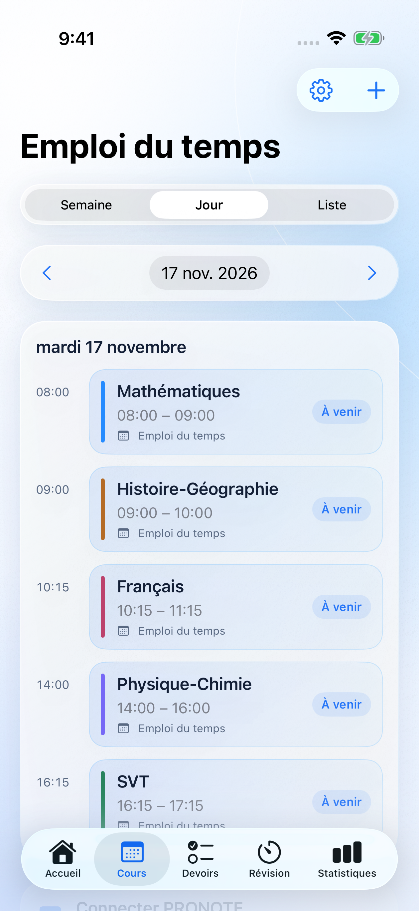
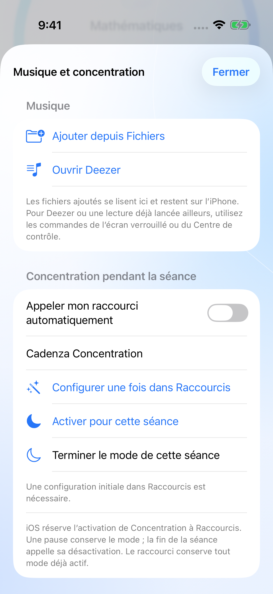
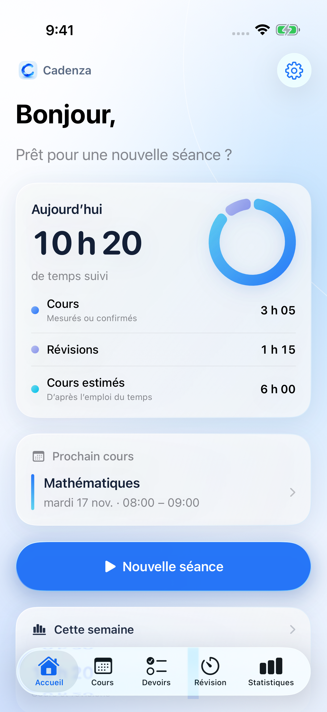
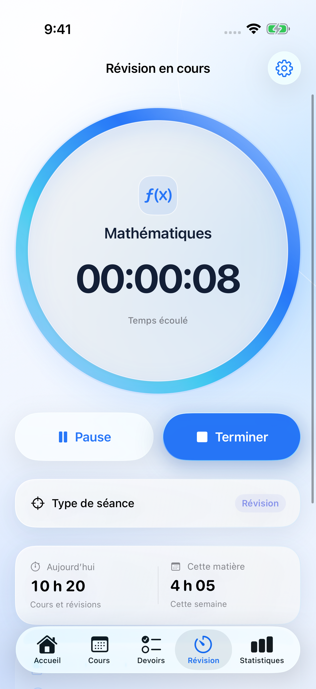
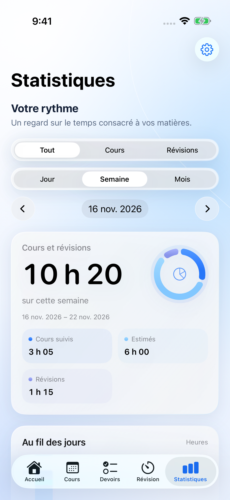
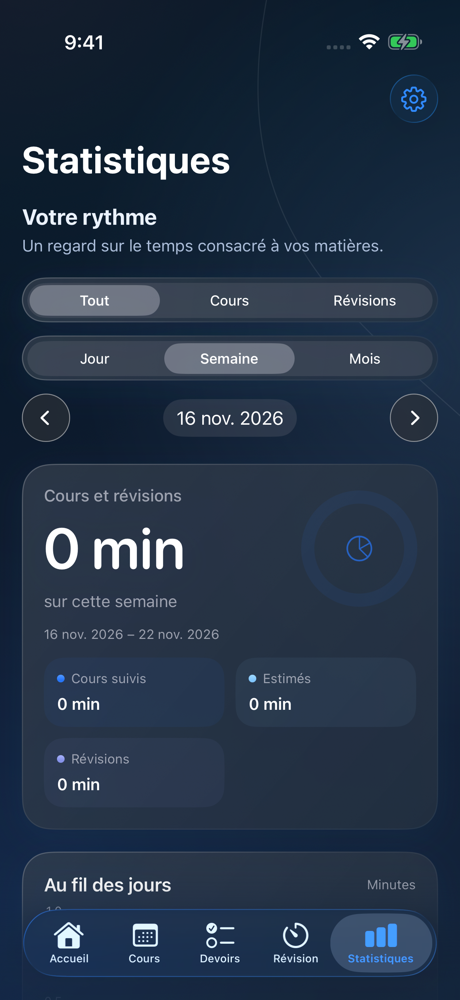
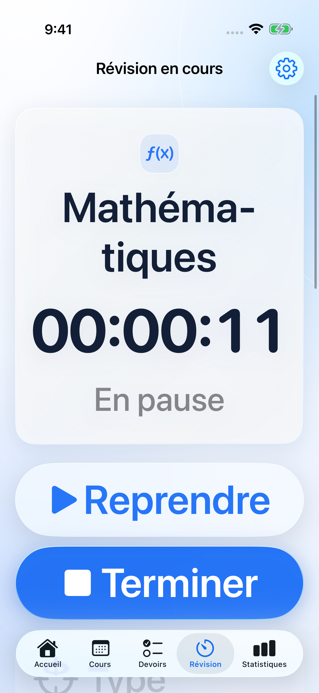
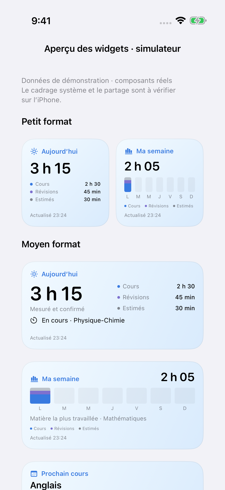
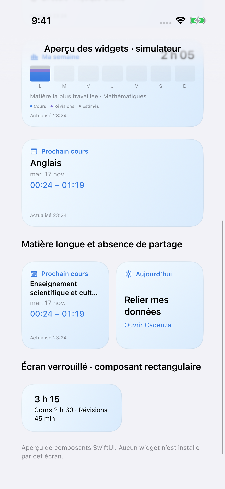
Le partage des widgets après Sideloadly, le raccourci Concentration et la lecture audio sur l’iPhone restent des vérifications matérielles distinctes. La CI ne mesure pas la consommation réelle du fond animé.